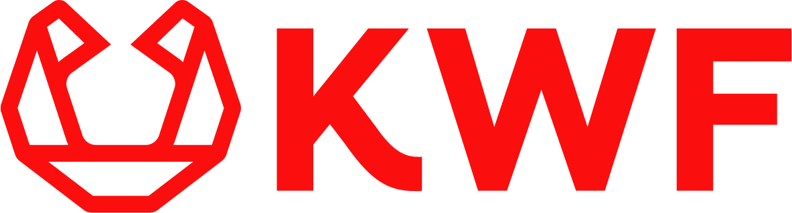
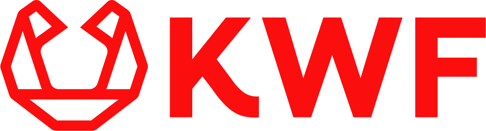

Welcome
My research focuses on developing targeted cancer therapies. A key problem is that cancer cells are hard to chemically tell apart from healthy cells. To solve this problem, I use genetic mutations that cause cancer as a vulnerability. To target these mutations, I rely on molecular tools that bacteria have evolved over 2 billion years to survive.
To do so, I run two parallel research lines:
- I study bacterial defense systems, especially those that trigger programmed cell death.
- I develop advanced delivery methods to bring these tools into human cells.
 


This work is supported by NWO and KWF, with patient engagement via Longkanker Nederland.